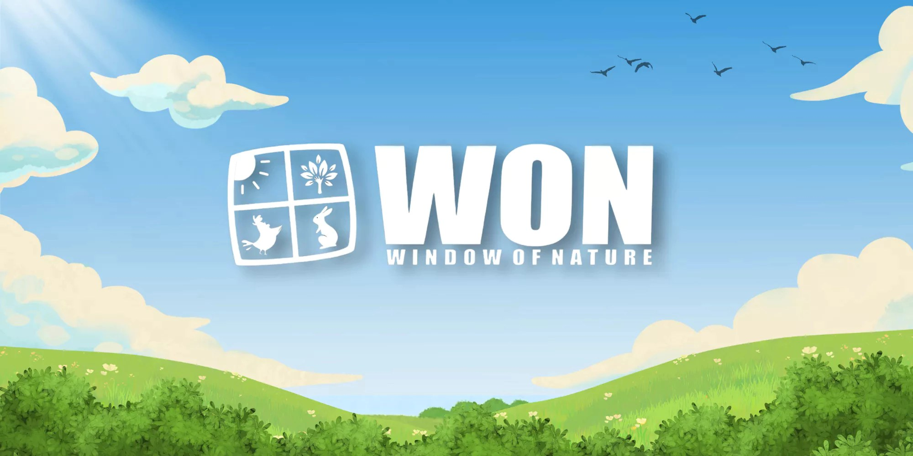

Rooted in nature.
Made for care.
WON is Window of Nature, our feedmill in Bandung. We make rabbit and poultry feed, offer custom feed and nutrition formulation, and bring together Shōri and imported Italian alfalfa.

Many kinds of animals.
One commitment to care.
The way we feed an animal is part of the way we care for it. At Window of Nature, our range makes space for different species, life stages and feeding routines—from a pet at home to a professional stable.
Find your collection.

Two alfalfa-based formulas. One thoughtful approach to rabbit feed.

A Japanese-inspired daily blend, with added vitamin C.

Starter and layer feed, with sizes for a home flock or a farm.

Selected forage, with a place in well-balanced feeding programmes.

Alfalfa in a practical 250 g resealable pouch.
Made around
your animals.
As a feedmill, we can customize feed and nutrition for your requirements. Share the species, life stage, nutrition goals and expected volume. We will discuss formulation, format and production with you.
A direct line
to Window of Nature.
For product questions, orders and business enquiries, our team is one conversation away.